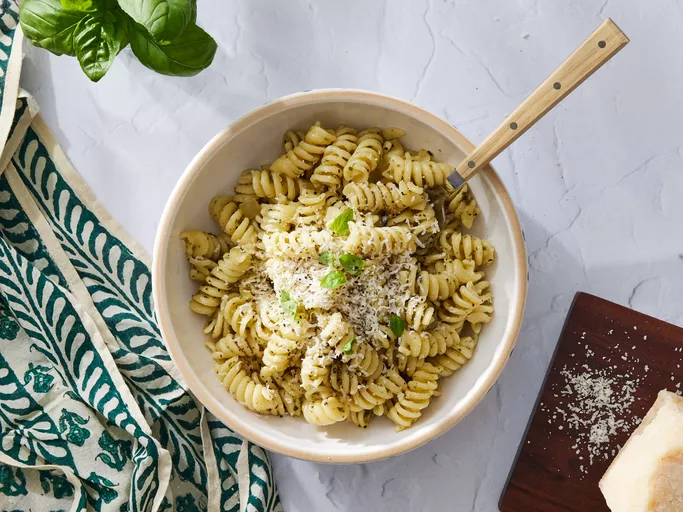

Pesto Pasta Recipe

Description
Pesto pasta is a simple yet flavorful dish made by tossing pasta with pesto sauce, a blend of fresh basil, garlic, pine nuts, Parmesan cheese, and olive oil. It’s fragrant, vibrant green, and offers a rich, herby taste.
Ingredients
- Pasta
- Onion and Oil
- Pesto
- Seasonings
- Cheese
Steps
- Boild your favorite pasta in salted water and drain.
- Cook the onion in oil, then stir in the basil pesto and seasonings.
- Add the pesto mixture to the hot pasta and toss with cheese.
Home